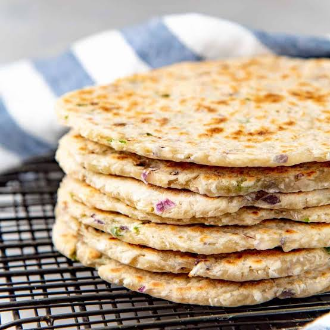

Back to Odin Recipe
Description
Pol Roti is a simple and quick recipe. You can serve pol roti with a paripu, curry, or sambol. In fact, any south Asian dish that normally parred with rice could be served with pol roti instead.

- Prep time: 20 min
- Cook time: 40 min
- Resting time: 4 hours
- Total: 1 hour
Ingredients
- 400g AP flour
- 150 g shredded desiccated coconut
- 1 1/4 tsp sea salt
- 1 medium red onion
- 3 long, green chilis
- 120 ml coconut milk
- 120 ml water
Instructions
- Place the flour, desiccated coconut, salt, onion, and chili in a large bowl. Mix to combine well.
- Mix the water and coconut milk in another bowl or jug.
- Add the liquid to the flour mixture, a little at a time, while stirring the flour with your fingertips (or with a fork).
- After adding about ½ of the liquid, gently stir the mixture. You will have some clumps and dry spots of flour. Drizzle the liquid over the dry parts of the flour, while mixing, to form a dough.
- Add 1 or 2 more tbsp of water ONLY if needed. The dough should come together, but still have dry spots on the surface. This is OK.
- If you add too much water, sprinkle in a little extra flour and lightly knead it into the dough (don’t over-knead!). Shape the dough into a rough ball.
- Cover the dough (or the bowl) with plastic wrap and let the dough rest for at least 4 hours, or up to 12 hours (room temperature is fine). If you want to store the dough for up to 24 hours, then refrigerate it.
- The dough should become really soft after it has rested. If it’s very sticky, generously flour the dough and the work surface to prevent it from sticking to your counter.
- Transfer the dough to your floured work surface. Cut the dough into 8 wedges. Lightly roll up each section into a rough ball. See pictures in the post.
- Take each dough ball and sprinkle some flour on top and on the work surface. Flatten it to a disc, and then roll it out to a circle using a rolling pin. The roti should be about 0.4 – 0.5 cm thick, and about 12 -15 cm (5 – 6 inches) in diameter. Cover the rolled out roti with a cloth napkin or plastic wrap (so that it doesn't dry out), and repeat rolling out all of the dough portions.
- Preheat a cast iron skillet or non-stick skillet over medium or medium high heat.
- When the pan is heated, transfer a roti onto the skillet and cook for about 2 – 3 minutes, until the bottom starts to develop brown spots.
- Flip the roti over and cook the other side for 2 – 3 minutes, until you get brown spots on that side too.
- Place the cooked roti on a wire rack to cool down. Repeat with the rest of the roti.
- Eat the roti warm or at room temperature.